我们每天都使用十进制。商品标价用十进制的元、角、分。而十进制小数揭示出了整数之间的那些数。
十进制小数，或者简称小数，在日常生活中随处可见。一朝学会，我们就会本能地意识到0.5就是一半，0.25就是所谓的一刻，0.1就是一分，也许0.01就是一厘。这里我们所做的一切就是用跟整数那套一模一样的系统来表示小数。
以小数表示的股价不断更迭，展现了世界经济形势。
普普通通
或许另一种说法的历史更为悠久——非整数都用普通分数（见第26页）来表示。“普通”一词多意。有时候它的意思是下里巴人，但是用在普通分数里则相当正规。在这个语境下，普通的意思是“简单”或者“未加工”。普通分数把某个整体分成小的部分。比如，一个整体可以分成两部分、三部分、四部分、五部分，等等。这样的话，如果想把1/4和1/5相加，计算时就有点麻烦，得先通分才可以（见第27页方框）。小数解决了这一难题（虽然小数带来了另外的难题，参见第96页方框）。
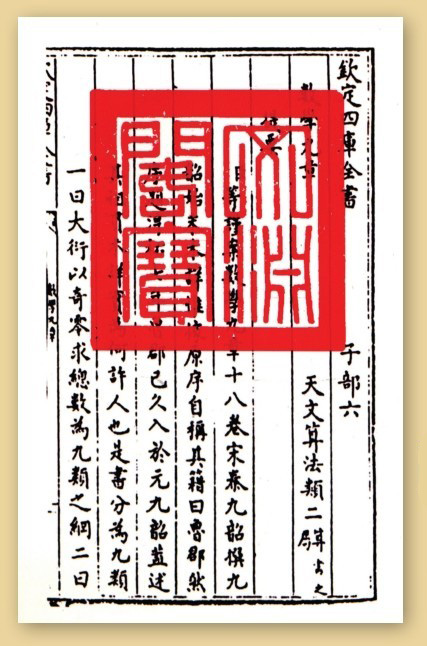
中国的数学著作《九章算术》中展示的小数。
十进制的使用
“十进制”这个词的意思是“使用十”（即满十进一），十进制小数对应的分母是10的幂（但没有显式写出），换言之，就是十分之几，百分之几，千分之几，等等。这种十进制小数的写法起源于400年前，是荷兰数学家西蒙·斯蒂文之功。使用十进制的想法出现得更早，虽然谁也不知道有多早，但是，我们知道中国、古希腊和埃及数学家以不同方式分别发明了它。他们的十进制系统是非常强有力的数学工具，在复杂研究中十分有用。当今，从经济活动、科研到商品价格标示和房屋面积统计，小数在日常生活的方方面面都很有用。
快艇车
比利时和荷兰海岸线，沿海围垦地上的快艇车比赛。
大多数语言中沿用希腊的数学语汇，但是西蒙·斯蒂文在数学中使用了荷兰语“wiskunde”，意思是“确信无疑”，他以此享誉。斯蒂文不仅仅是数学领域的发明家，传说他在1600年左右发明了快艇车。他的奇妙装置取悦了奥兰治的毛里斯亲王——佛兰德斯统治者，佛兰德斯是一片平坦的沿海围垦地。
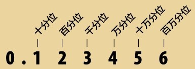
十进制小数使用进位制数字系统表示介于整数之间的数。
六十进制的放弃
很奇怪，一般大众习惯使用十进制小数之前很久，人类已经在用另一套很相似的系统——六十进制小数。我们沿袭巴比伦人的系统，他们不是用10，而是用60来构建数字系统（见第16页：数字系统）。所以，巴比伦人不对物品做10等分，他们做60等分。后来，巴比伦文明消失了，使用60等分为单位的思路却流传下来了。小的单位，或者说“分”（来自拉丁文，意思是“小”）就是1/60，“秒”又是分的1/60。我们现在还用“分”“秒”这些词（见第18页）。16世纪，把一份分成60小份，或者其衍生物，比如12小份，是很常见的做法。然而，1575年，法国数学家弗朗索瓦·维特提出要用基于10的系统，他声言十进制小数写起数字来比π或者Ф什么的更方便。
十进制的艺术
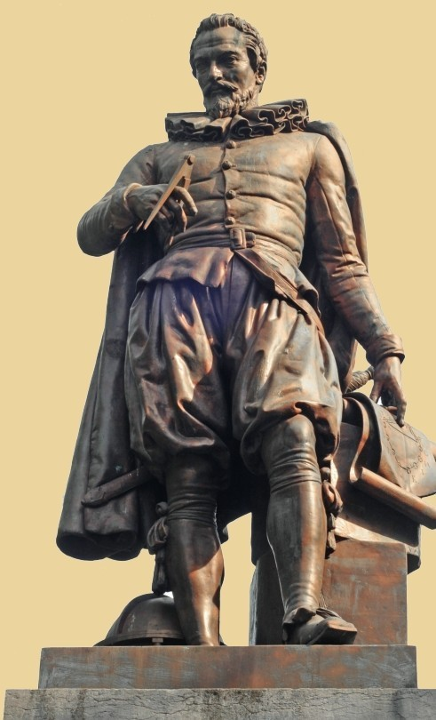
西蒙·斯蒂文的雕像矗立于比利时的布鲁日，以纪念他在工程和数学上的功勋。
现今使用的十进制小数来自西蒙·斯蒂文，1585年，他在其著作《论十进》（也即讨论十进制的艺术一书）中，发明了十进制小数的写法。斯蒂文的十进制系统在下一页展现。他在“0”上画个圈表示其余是小数部分，那么，“5”后面圆圈里有个1表示5×10-1或者5个0.1；然后，“4”后面圆圈里有个2表示4×10-2或者4个0.01；这个小数里还包含2个0.001和9个0.0001。跟现代系统相比，斯蒂文的系统挺烦琐的，但是对于使用整数进位制的系统来说，这是个突破。
小数标注
现代小数的标注方法从1585年西蒙·斯蒂文发明以来，经历了超过一个世纪的变革，右表展示了其随时间的演进。这些人都是在探索：在哪里应该标明数字单位变小了，变成十分位、百分位、千分位了。括弧、冒号以及各式各样的下标和上标都试行过。1691年，圆点开始使用了。
圆点左边的个位数表示乘以10，右边的十分位数表示除以10。在某些欧洲传统中，划分的标点用的是逗号，独树一帜。
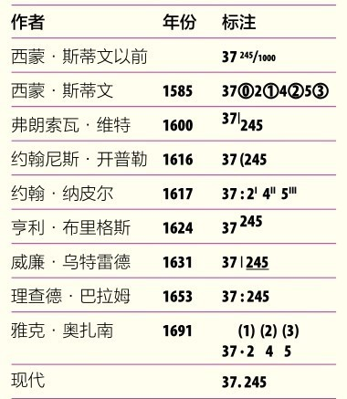
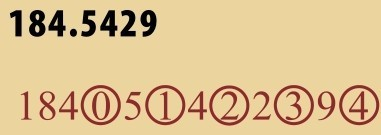
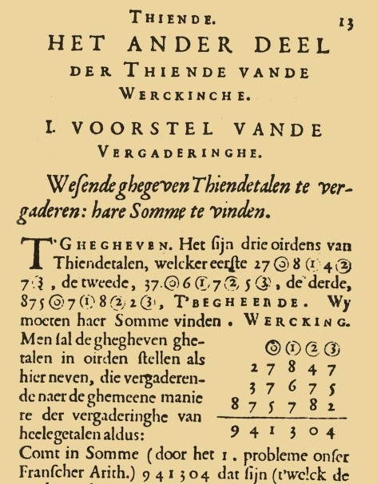
十进制小数的现代写法和1585年西蒙·斯蒂文在《论十进》中创立的写法。
去右边
我们对整数的写法很熟悉了：个位数0~9写在右边，十、百、千写在左边。小数系统也用同样的方式表示小于1、大于0的数，把数写在个位数的右边。斯蒂文在整数部分后面用一个圈里的零来表示其后的是小数部分，到了17世纪90年代，这个写法变形成了一个点（见上页方框）。最初的书面记录来自法国人雅克·奥扎南的数学词典。小数点右边的第一个数字代表十分之一，第二个代表百分之一，然后是千分之一，以此类推，可以延伸到无穷无尽，无以命名。
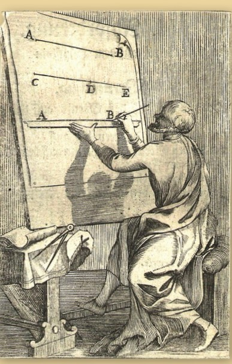
雅克·奥扎南书中的一幅插画，用小数系统分割线段。
循环小数
循环小数是无穷长，但是有循环节的小数。最简单的类型如1/3，就是0.3后面带了无穷个3的小数。它用首位3上加一个点来表示。有的循环小数是从后几位才开始循环的。在循环节上才加点。对循环节多于两位数字的，在循环节的首位和末位数字上加点。
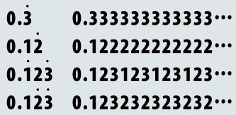
简单的分数
1/2写成小数是0.5。0表示没有整数部分，小数点之后的5表示有5个1/10，作为普通分数来说就是5/10，可以化简成1/2。同理，
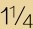
就是1.25，1表示1个单位1，小数点后有2个1/10和5个1/100：1+2/10+5/100。它可以化简成1+25/100或者1+1/4。这有助于理解分数与小数的等价关系：0.75就是3/4，0.2就是1/5，0.125就是1/8。然而，无须将它们化简为普通分数，因为它们的表示方式一致，可以直接做算术运算：1/4乘以2就是0.25×2=0.5（注意小数末尾的零就不用写出来了）。显式表达
对于1/3或者其他无法被10的幂整除的小数来说，小数系统的效率挺低的。1/3写成小数就是0.3后面有无穷个3，没法全部写出来，这就是所谓的循环小数（见对页方框）。尽管如此，循环小数似乎也是可以精确估计的，其位数越多，就跟真实值越接近。所以，0.333比0.33更精确，但是不如0.3333。六位的小数可以表示任何误差在百万分之一以内的循环小数。
参见：
▶乘方，第76页
▶度量与单位，第122页
原理
现在我们了解小数了，来看看如何在分数和小数之间转化。
分数转化为小数：
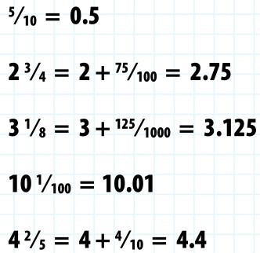
小数转化为分数：
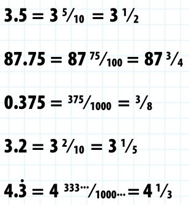